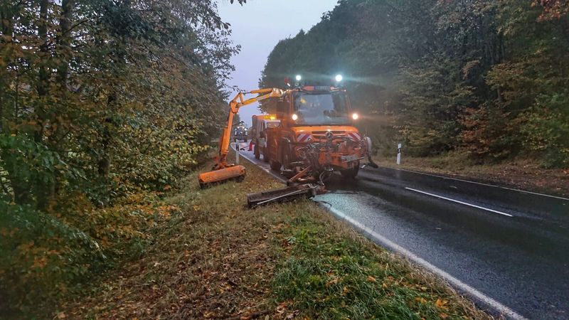
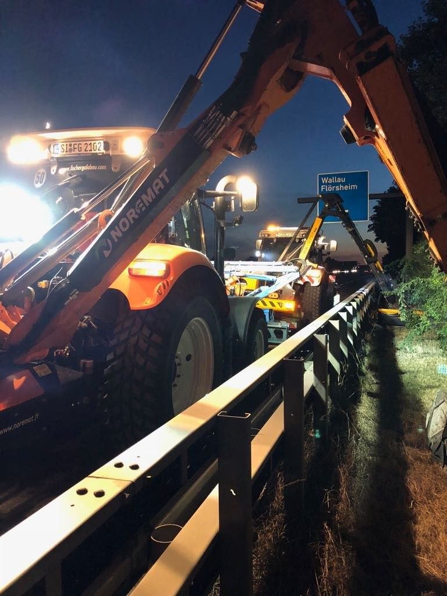

Saison Mai bis Oktober
Mähen Gehölz Mittelstreifen
Gras und Gehölzaufwuchs zwischen den Schutzplanken. Mit Schlegelmähkopf oder Häcksel-Mähkopf, je nach Bewuchs, und mit Absaugung des Mähguts.
Die Leistung
Wenig Platz, viel Verkehr auf beiden Seiten
Der Mittelstreifen trennt die Richtungsfahrbahnen von Autobahnen und vierstreifigen Bundesstraßen. Er ist schmal, liegt zwischen Schutzplanken und ist nur vom Fahrstreifen aus zu erreichen. Was dort wächst, darf weder die Sicht nehmen noch über die Planken in den Verkehrsraum ragen.
Neben Gras kommt dort schnell Gehölz hoch, vor allem wo längere Zeit nicht gepflegt wurde. Deshalb arbeiten wir mit zwei verschiedenen Mähköpfen und saugen das Mähgut direkt ab.

So arbeiten wir
Zwei Mähköpfe, je nach Bewuchs
Welcher Kopf zum Einsatz kommt, entscheidet der Zustand des Streifens. Das sprechen wir vor dem Einsatz ab.
Schlegelmähkopf
Eine schnell drehende Welle mit beweglich aufgehängten Schlegeln. Trifft ein Schlegel auf einen Stein oder Unrat, weicht er aus, statt zu brechen.
- Für Gras, Kraut und dünnen Aufwuchs
- Gleichmäßiges, fein zerkleinertes Schnittbild
- Unempfindlich gegen Steine und Müll, wie sie am Mittelstreifen liegen
Häcksel-Mähkopf
Gebaut für holzigen Aufwuchs. Junge Gehölze, Brombeeren und Triebe aus alten Wurzelstöcken werden erfasst und gleich zerkleinert.
- Für verbuschte Abschnitte und Gehölzaufwuchs
- Schneidet und häckselt in einem Arbeitsgang
- Sinnvoll, wenn der Streifen länger nicht gepflegt wurde
Mähgutabsaugung: Das Schnittgut bleibt nicht liegen
Direkt am Mähkopf wird das Mähgut abgesaugt und in einen Sammelbehälter gefördert. Auf dem Mittelstreifen bleibt nichts zurück, das bei Regen in die Rinnen gespült oder vom Fahrtwind auf die Fahrbahn getragen wird.
Ein zweiter Effekt: Ohne liegende Mulchschicht werden dem Boden keine Nährstoffe zugeführt. Der Aufwuchs wird mit der Zeit schwächer, und das kommt dem nächsten Pflegegang zugute.


Für wen
Für Autobahn und Bundesstraße
Mittelstreifen gibt es dort, wo zwei Richtungsfahrbahnen getrennt sind.
Die Autobahn GmbH des Bundes
Mittelstreifen und Bereiche an Anschlussstellen auf Autobahnen.
Hessen Mobil
Vierstreifig ausgebaute Bundesstraßen mit Mittelstreifen und Schutzplanken.
Absicherung
Gearbeitet wird unter Verkehr. Die Absicherung der Arbeitsstelle stimmen wir vorab mit dem Auftraggeber ab.
Weitere Leistungen
Was wir außerdem mähen und schneiden
-

Mähen von Straßenbegleitgrün
Bankette, Gräben und Böschungen an Bundes-, Landes- und Kreisstraßen. Gemäht mit Ausleger und Frontmähwerk, an Leitpfosten und Schildern von Hand.
-

Mähen an Radwegen
Seitenstreifen an straßenbegleitenden und freien Radwegen. Damit der Weg in voller Breite nutzbar bleibt und in Kurven die Sicht frei ist.
-

Mähen Sonderflächen
Kreisverkehre, Verkehrsinseln, Einmündungen, Lärmschutzwälle und andere Flächen, die in keinen Standardumlauf passen.
-

Mähen Regenrückhaltebecken
Böschungen, Dämme und Zufahrten von Rückhaltebecken. Damit Zulauf und Ablauf frei bleiben und sich auf dem Damm kein Gehölz festsetzt.
-

Gehölzrückschnitt
Äste und Sträucher, die in den Verkehrsraum wachsen oder Schilder verdecken. Rückschnitt, Abtransport und Entsorgung aus einer Hand.


Anfrage
Um welchen Abschnitt geht es?
Nennen Sie uns Strecke, Kilometrierung und den Zustand des Bewuchses. Wir sagen Ihnen, welcher Mähkopf passt, und schicken ein Angebot.
Erreichbar Montag bis Sonntag, 7 bis 20 Uhr